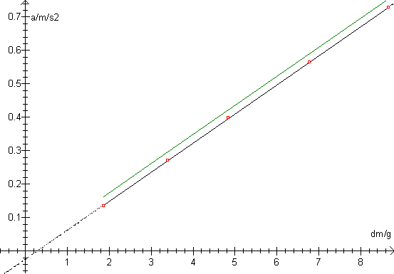

Forsøg udført af Jon Eilenberg, 2y, Frederikssund Gymnasium

Se øvelsesvejledningen til Newtons 2. lov vha. Smart Pulley Timer.
De målte punkter ligger på linien y = 0.0871*dm - 0.026 bestem vha. lineær regression.
Den teoretiske graf er givet ved y = g*dm/(M1 + M2 + 4.2g), og hældningen bliver her 0.0870.
De to grafer er altså nydeligt parallelle. De 4.2 gram skyldes trissens inertimoment.